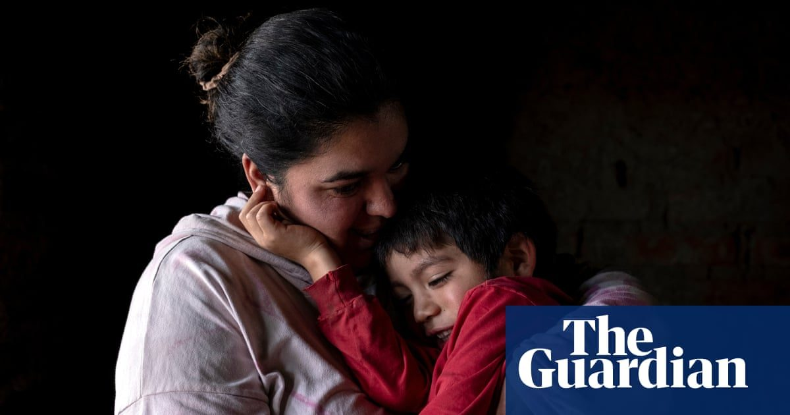

Скрытые издержки фрекинга: бум в Аргентине связан с болезнью
Семьи в Вака Муэрта, центре добычи сланца в Патагонии, сообщают о раковых заболеваниях, выкидышах и загрязнении.
В Аллене, небольшом городке в аргентинской Патагонии, многие люди, живущие на одной улице, заболели.
Для некоторых это были сильные мигрени, тошнота или раздражение кожи.
В других случаях рак, врожденные аномалии, выкидыши или мертворождения, по-видимому, влияли на плод или детей.
Люди говорят, что все началось 13 лет назад – когда скважина была